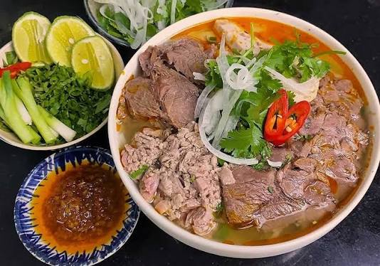

Bún Bò Huế
A bold, fragrant broth from the royal city.
Thick rice noodles swim in a deep-red, lemongrass-scented broth alongside tender beef shank and pork. Bún Bò Huế is richer and spicier than most Vietnamese soups, carrying centuries of royal Huế culinary tradition in every bowl.

The dish at a glance
Central Vietnam's most iconic noodle soup
Bún Bò Huế originates from Huế, the former imperial capital of Vietnam. Its broth is built on beef and pork bones simmered for hours with lemongrass, shrimp paste (mắm ruốc), and dried chili oil, giving it a complex, fragrant heat quite unlike the more delicate pho of the north. Thick round rice noodles (bún) and generous cuts of meat make it a deeply satisfying meal.
Spicy & aromatic
Lemongrass, shrimp paste, and chili oil layer heat and fragrance into the long-simmered broth.
Hearty & rich
Thick rice noodles and generous cuts of beef shank and pork make every bowl a satisfying meal.
Fresh & vibrant
Bean sprouts, banana blossom, sawtooth herb, and lime brighten the bold broth with every bite.
Huế · Imperial Era
Born in the
royal kitchens.
Huế served as Vietnam's imperial capital under the Nguyễn dynasty from 1802 to 1945, and its cuisine reflects centuries of refined royal cooking. Bún Bò Huế is thought to have evolved from the elaborate banquet dishes prepared for the imperial court, where chefs competed to create layered, complex flavors using locally grown lemongrass, fermented shrimp paste, and prized cuts of beef and pork.
Today it remains a point of intense local pride. Residents of Huế are famously particular about the authentic balance of its broth — the right depth of shrimp paste, the correct heat from chili oil, and noodles of exactly the right thickness.
Read more about the dish: Wikipedia – Bún Bò Huế.
From Huế to your kitchen
Make Bún Bò Huế at home
A home-friendly version of the classic. The broth requires patience but rewards it generously. Adjust the shrimp paste and chili to suit your taste — the soul of Bún Bò Huế lies in that balance.
- Serves
- 4–6 people
- Preparation
- About 30 minutes
- Simmering
- At least 2 hours
- Cooking
- About 15 minutes
Ingredients
Broth
- 1 kg beef shank, bone-in
- 500 g pork trotters or pork hock, chopped
- 3 stalks lemongrass, bruised and cut into thirds
- 2 tbsp fermented shrimp paste (mắm ruốc)
- 1 tbsp fish sauce, plus more to taste
- 1 tsp sugar
- 2 litres water
Chili lemongrass oil
- 3 tbsp neutral oil
- 2 stalks lemongrass, finely minced
- 2 tbsp chili flakes or annatto seeds for color
- 3 shallots, minced
- 2 garlic cloves, minced
To serve
- 400 g thick round rice noodles (bún bò Huế noodles)
- 1 handful bean sprouts
- ½ banana blossom, thinly sliced (optional)
- Sawtooth herb, Vietnamese mint, and lime wedges
- Sliced fresh chili to taste
Step by step
-
Blanch the bones & meat
Place the beef shank and pork in a large pot, cover with cold water, and bring to a boil. Boil for 5 minutes, then drain and rinse the meat under cold water. This removes impurities and keeps the broth clear.
-
Build the broth
Return the meat to the pot with 2 litres of fresh water, the bruised lemongrass, fish sauce, and sugar. Bring to a boil, then reduce to a low simmer. Cook for at least 2 hours, skimming any foam, until the beef shank is tender. Remove the beef shank and slice thinly. Discard the lemongrass.
-
Make the chili lemongrass oil
Heat the oil in a small pan over medium heat. Add the shallots and garlic, cooking until softened and fragrant. Add the minced lemongrass and chili flakes (or annatto seeds). Stir for 2 minutes, then remove from heat. This aromatic oil is stirred into the broth and also offered at the table.
-
Season the broth
Dissolve the fermented shrimp paste in a little warm water and stir into the simmering broth. Add most of the chili lemongrass oil. Taste carefully and adjust with fish sauce, sugar, or more shrimp paste to achieve the characteristic deep, savory heat of an authentic Bún Bò Huế broth.
-
Cook the noodles & prepare garnishes
Cook the rice noodles according to package instructions, then rinse with cold water and drain. Arrange the bean sprouts, banana blossom, herbs, lime wedges, and fresh chili on a serving plate for the table.
-
Assemble and serve
Divide the noodles into deep bowls. Top with slices of beef shank and pieces of pork. Ladle the steaming broth generously over the top. Finish with a drizzle of the remaining chili lemongrass oil. Serve immediately with the fresh garnishes on the side.
The best part
How to enjoy Bún Bò Huế
Start with the broth
Take a sip of the broth first to appreciate its depth — the lemongrass, shrimp paste, and chili should all be present but balanced.
Layer in the greens
Add bean sprouts and herbs directly into the bowl so they soften slightly in the hot broth. Squeeze lime over the top for brightness.
Adjust the heat
Add fresh chili slices or extra chili oil to dial up the spice — Bún Bò Huế is meant to be bold and should gently warm you from within.
Keep exploring the flavors of Vietnam.
Explore all dishes